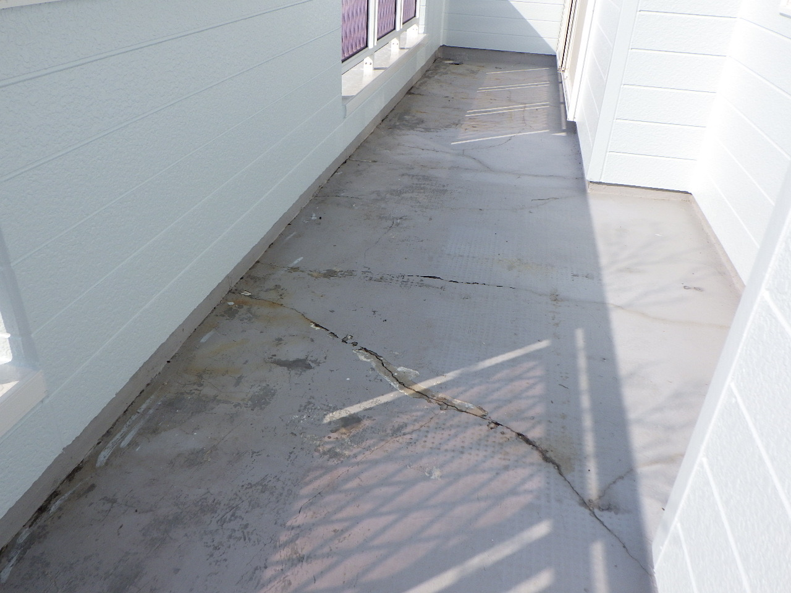

ご挨拶
当社は土木・建築の補修工事を中心に、 高品質な施工を提供しています。 小規模な住宅から大型施設まで幅広く対応し、 確かな技術で信頼に応えます。
事業内容
土木構造物補修工事
橋梁・トンネル・インフラ設備の維持管理に対応し、 高度な補修技術で社会基盤を支えます。
建築物維持補修工事
マンション・学校・公共施設・一般住宅など、幅広いニーズに応え、 安全性と耐久性を重視した施工を行っています。

TEL：0985-66-0794
FAX：0985-69-9179

当社は土木・建築の補修工事を中心に、 高品質な施工を提供しています。 小規模な住宅から大型施設まで幅広く対応し、 確かな技術で信頼に応えます。
橋梁・トンネル・インフラ設備の維持管理に対応し、 高度な補修技術で社会基盤を支えます。
マンション・学校・公共施設・一般住宅など、幅広いニーズに応え、 安全性と耐久性を重視した施工を行っています。